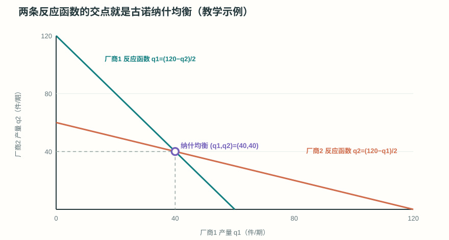
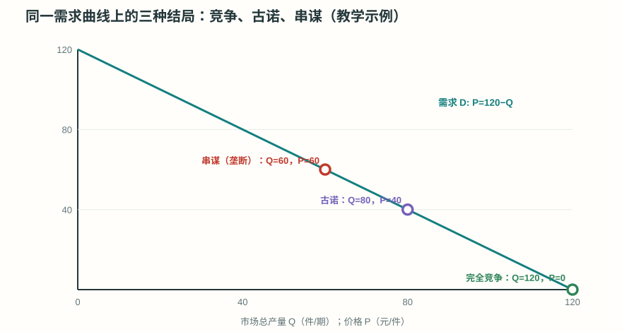

CHAPTER 17 · MICROECONOMICS
寡头垄断（上）：数量与价格竞争
几家大企业互相牵制：用同一组方程推导古诺数量均衡、伯川德价格战与斯塔克伯格的先动优势。
少数卖家，一举一动相互影响
垄断竞争中有许多小企业，完全竞争中有无数家企业。但还有一类市场：只有反正两家到几家大企业，每一家的定价或产量都会明显影响对手，而对手的反应又反过来影响自己。这就是寡头垄断 oligopoly：民航、电信运营商、智能手机芯片、碳酸饮料、网约车平台。
寡头分析的核心不是单方面“选一个最优量”，而是我为你算、你为我算的策略互动。本章用同一个教学示例（反需求 P=120−Q、两家边际成本为 0）依次讲清三种经典博弈：同时选数量（古诺）、同时报价格（伯川德）、一先一后（斯塔克伯格）。
古诺模型：同时选择数量
古诺模型 Cournot model：两家企业同时决定各自的产量，市场价格由两者总产量决定：P=120−(q₁+q₂)。厂商 1 的利润是
这条 q₁ 与 q₂ 的关系就是厂商 1 的反应函数 best-response function：对手产得越多，我就产得越少。厂商 2 完全对称，q₂=(120−q₁)/2。联立两个方程得古诺纳什均衡：q₁=q₂=40，总产量 Q=80，价格 P=40，每家利润 =(40−0)×40=1600。

需要分清：这里的均衡是数量竞争的均衡。若企业改为在价格上较劲，结果会完全不同（下一节）。
伯川德模型：价格战
换一种竞争方式：两家卖同质产品，同时报出价格，消费者只买便宜的那家。此时任何 P>MC 都会被对手“便宜一分钱”击落并抢走全部市场，于是价格一路降到 P=MC。
教学示例中 MC=0，故 P=0、Q=120，两家利润均为 0——即使市场只有两家企业。这个与完全竞争相同的结果被称为伯川德悖论 Bertrand paradox。
古诺与伯川德给出截然不同的答案，提醒我们：竞争结果取决于市场“规则”——企业比的是数量还是价格、产品是否同质、产能是否受限。现实中产品常有差异或产能有限，价格战未必打到成本线。
斯塔克伯格：先动优势
若厂商 1 先行动、厂商 2 看到后再决策（序贯博弈），先动者可以预判对方的反应函数 q₂=(120−q₁)/2，把它代入自己的目标再求最大：
代入反应函数得 q₂=(120−60)/2=30，于是 Q=90、P=30。领导者利润 =60×30=1800，追随者利润 =30×30=900。先动者主动“多产”，通过压低价格逼对方缩减产量，从而攫取更大份额——这就是先动优势 first-mover advantage。它并不意味着先动总是更好：若产能、信息或承诺不可信，结论会改变。
三种结局的对比
把完全竞争、古诺双头与串谋（两家合谋像一家垄断）放在同一条需求曲线上：

| 市场结果 | 总产量 Q | 价格 P | 行业利润 |
|---|---|---|---|
| 完全竞争 | 120 | 0 | 0 |
| 古诺双头 | 80 | 40 | 3200 |
| 串谋（垄断） | 60 | 60 | 3600 |
古诺结果居中：比串谋产量高、价格低，但离完全竞争仍有距离。这也说明为何反垄断机构警惕企业间的勾连——串谋能同时抬高价格、压低产量，把消费者剩余转为利润。
交互实验：企业数量
企业数量与市场结果
反需求固定为 P=120−Q，所有企业边际成本为 0。拖动滑块改变对称古诺市场中的企业数量 n，观察每家产量、总产量与价格如何随 n 变化。
厂商数 n=2：每家 q=40，总产量 Q=80，价格 P=40，行业总利润=3200。（古诺双头）
对称古诺解析解：每家 q=120/(n+1)，总产量 Q=120n/(n+1)，价格 P=120/(n+1)；不使用随机值。
当 n=1 时结果是什么？当 n 越来越大时，价格会趋于多少？
查看答案
n=1 时 q=60、Q=60、P=60，行业利润 3600——正好是垄断（也是串谋）的结果。n→∞ 时 q→0、Q→120、P→0、利润→0，与完全竞争一致。这直观展示了：竞争越充分，价格越趋近边际成本。
引用文献与适用范围
本章的方程与数值（反需求 P=120−Q、边际成本为 0）均为教学示例，不是观测数据；寡头模型的概念参考以下教材：
- OpenStax · Principles of Microeconomics 3e, Ch. 8: Monopolistic Competition and Oligopoly
- OpenStax · Principles of Microeconomics 3e（教材首页）
纳什均衡、反应函数与先动优势是博弈论与产业组织的标准概念，本章为简化处理，采用线性需求、同质产品与相同成本；未引用任何具体企业或反垄断案例的金额数据，以免不可核验。